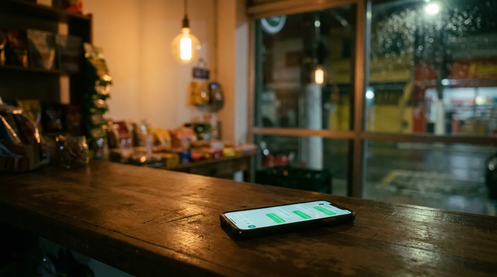
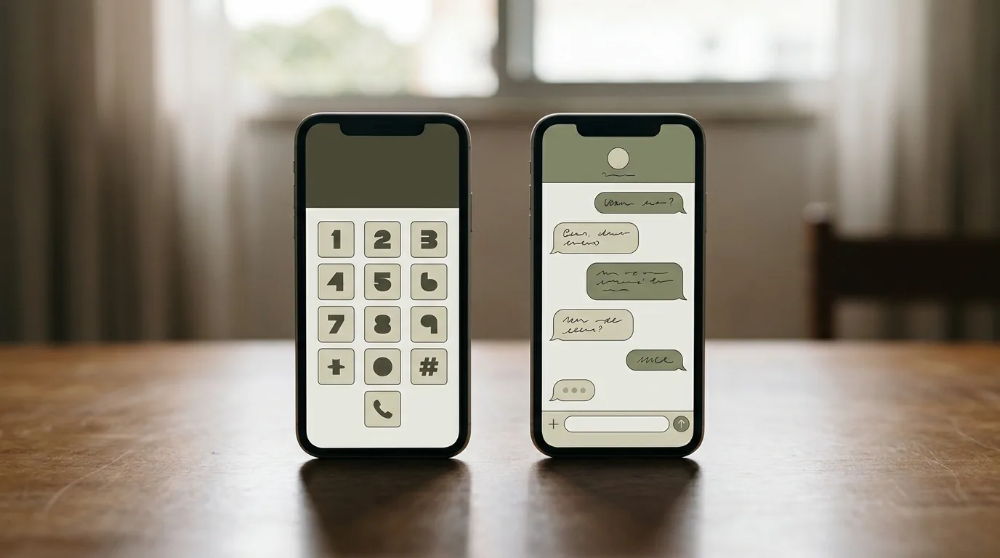
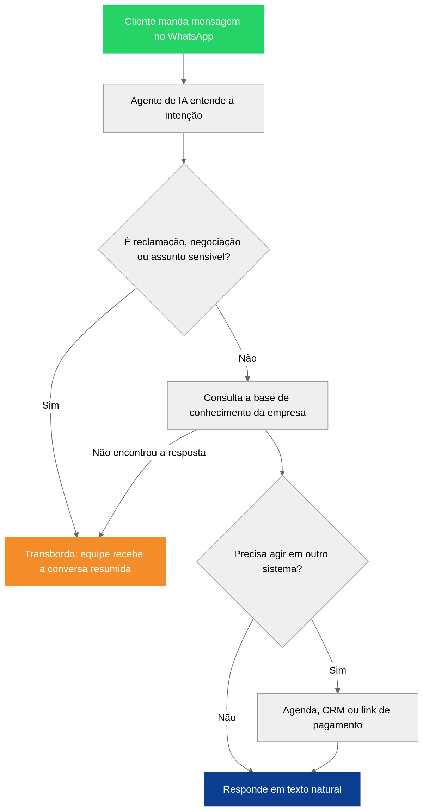

Agente de IA para WhatsApp: O que É e Como Funciona

São 22h de uma quinta-feira. Um cliente manda mensagem no WhatsApp da sua empresa perguntando o preço de um serviço e se dá para agendar no sábado. Ninguém responde até a manhã seguinte. Quando a sua equipe chega, ele já fechou com o concorrente que respondeu em cinco minutos.
Essa cena é comum em empresa pequena que atende pelo WhatsApp. O WhatsApp virou o principal canal de venda de muita gente, e a velocidade de resposta passou a decidir quem fica com o cliente.
O agente de IA para WhatsApp é uma forma de resolver isso sem colocar alguém de plantão 24 horas. Este guia explica o que ele é, como funciona por dentro e em que ele é diferente do chatbot de menu. Mostra também o que é preciso para colocar um no ar, quanto custa e quais cuidados a sua empresa precisa tomar.
O que é um agente de IA para WhatsApp
Um agente de IA para WhatsApp é um assistente virtual que conversa com os seus clientes pelo WhatsApp usando inteligência artificial. Ele entende a mensagem do jeito que a pessoa escreve, consulta as informações da sua empresa e responde com texto natural, como um atendente faria.
A palavra "agente" não está ali por acaso. Além de responder, ele pode executar tarefas: consultar a agenda e marcar um horário, registrar o contato no seu CRM (o sistema onde ficam clientes e vendas), gerar um link de pagamento ou abrir um chamado. Quando o assunto exige, ele passa a conversa para uma pessoa da equipe.
Por trás, existem três peças trabalhando juntas:
- O canal. A conexão oficial com o WhatsApp, por meio da plataforma empresarial da Meta, a WhatsApp Business Platform, também chamada de API do WhatsApp, que é a porta pela qual um sistema troca mensagens com o WhatsApp.
- O modelo de linguagem. A inteligência artificial que interpreta a mensagem e redige a resposta. É a mesma família de tecnologia por trás de ferramentas como o ChatGPT.
- A base de conhecimento e as integrações. Tudo que o agente precisa saber sobre a sua empresa (serviços, preços, horários, políticas) e os sistemas em que ele pode agir, como agenda, CRM e sistema de pedidos.
Em uma frase: o agente de IA lê o que o cliente escreveu, procura a resposta no que você ensinou a ele e, quando pode, resolve o pedido sozinho. Quando não pode, chama alguém da equipe.
Agente de IA ou chatbot de menu: qual é a diferença
Muita empresa já teve uma experiência ruim com robô de atendimento e ficou com um pé atrás. Quase sempre, o que ela usou foi um chatbot de menu, que funciona de outro jeito.
O chatbot de menu segue um roteiro fixo: "Digite 1 para orçamento, 2 para suporte, 3 para falar com atendente". Se o cliente escreve algo fora do roteiro, o robô não entende e repete o menu. É útil para triagem simples e frustrante para todo o resto.
O agente de IA para WhatsApp não depende de roteiro. O cliente pode escrever "oi, vocês atendem no sábado? queria ver o preço da limpeza de pele" numa mensagem só, e o agente entende as duas perguntas e responde às duas.
| Critério | Chatbot de menu | Agente de IA para WhatsApp |
|---|---|---|
| Como o cliente interage | Escolhendo opções numeradas | Escrevendo como escreveria para uma pessoa |
| Entende perguntas fora do roteiro | Não | Sim, dentro do que foi ensinado |
| Responde várias perguntas numa mensagem | Não | Sim |
| Executa tarefas (agendar, registrar, cobrar) | Só se programado passo a passo | Sim, por meio de integrações |
| Tempo de configuração | Curto | Médio, exige montar a base de conhecimento |
| Risco de responder errado | Baixo, porque só repete o roteiro | Existe e precisa ser controlado com regras e testes |
| Melhor para | Triagem simples e poucos assuntos | Atendimento com dúvidas variadas e agendamento |
A linha do risco merece atenção. Como o agente gera a resposta, ele pode errar, e às vezes com muita segurança. Quando ele afirma algo que não está na base da empresa, o mercado chama isso de alucinação. A forma de controlar é limitar o que o agente pode dizer ao conteúdo que você aprovou, proibir que ele invente preço ou prazo e fazer muitos testes antes de ir ao ar.

Como o agente de IA funciona numa conversa real
Vale acompanhar uma conversa do começo ao fim para ver onde cada peça entra.

1. A mensagem chega. O cliente escreve no número oficial da empresa. A plataforma do WhatsApp entrega essa mensagem ao sistema do agente.
2. O agente entende a intenção. Ele identifica o que a pessoa quer: preço, horário, status de pedido, reclamação, agendamento.
3. Ele consulta a base da empresa. Busca a informação nos documentos e dados que você cadastrou: tabela de serviços, política de cancelamento, endereço, horário de funcionamento.
4. Se precisar, ele age. Consulta horários livres na agenda, registra o contato no CRM, envia um link de pagamento.
5. Ele responde. Em texto natural, dentro do tom de voz definido para a sua marca.
6. Ou ele passa adiante. Reclamação, negociação de preço, caso fora do padrão ou cliente que pede para falar com gente: o agente transfere para a equipe. A conversa vai junto, resumida, para ninguém ter que perguntar tudo de novo. Esse repasse se chama transbordo, e é uma das partes mais importantes do projeto.
Um agente bem montado não tenta resolver tudo. Ele resolve bem o que é repetitivo e entrega o resto para quem sabe decidir.
Se você quer ver como isso ficaria com as perguntas que os seus clientes fazem hoje, converse com a equipe da Drive Digital. A gente começa lendo conversas reais do seu atendimento para entender o que dá para automatizar.
O que dá para automatizar e onde ter cuidado
Tarefas em que o agente de IA costuma render bem
Dúvidas frequentes. Horário, endereço, formas de pagamento, prazo de entrega, o que está incluído em cada serviço. É o volume que mais toma tempo da equipe e o mais fácil de automatizar.
Qualificação de contato. O agente faz as perguntas que o vendedor faria (o que a pessoa procura, para quando, em que região) e entrega o contato já organizado. Assim o vendedor já sabe quem está pronto para comprar e quem ainda está pesquisando, que é a lógica do funil de vendas.
Agendamento. Clínicas, salões, oficinas, consultórios e escritórios ganham muito quando o cliente consegue marcar horário às 23h sem esperar resposta.
Atendimento fora do horário. O contato que chega à noite ou no fim de semana recebe resposta na hora e fica registrado para a equipe dar continuidade.
Status de pedido e segunda via de boleto. Quando existe integração com o sistema, o agente consulta e responde sozinho.
Resposta rápida a quem veio de anúncio. Quem clica num anúncio e cai no WhatsApp espera resposta imediata. Um agente de IA para WhatsApp reduz a perda de contatos que você pagou para trazer, e por isso combina bem com o trabalho de uma agência de tráfego pago.
Exemplos por tipo de negócio
Clínica ou consultório. O agente informa convênios aceitos, envia as instruções de preparo para exames aprovadas pela clínica e marca a consulta direto na agenda, sem dar orientação clínica.
Oficina mecânica. Recebe a descrição do problema, pede a placa e o modelo do carro, informa os horários livres para avaliação e avisa quando o orçamento fica pronto.
Escritório de contabilidade. Responde sobre prazos de declaração, lista os documentos necessários para cada serviço e encaminha para o contador quando a dúvida é específica do cliente.
Loja com entrega local. Informa o valor do frete por bairro, confirma disponibilidade de produto e envia o status do pedido quando há integração com o sistema da loja.
Onde manter uma pessoa na conversa
Negociação e exceções. Desconto, condição especial, pedido fora do padrão.
Reclamações. Cliente irritado quer ser ouvido por alguém. O agente acolhe, registra e transfere rápido.
Assuntos sensíveis. Saúde, jurídico, financeiro. O agente pode informar e agendar, mas não deve dar diagnóstico, parecer ou orientação que dependa de um profissional.
Regra que evita dor de cabeça: o cliente sempre deve conseguir falar com uma pessoa, e deve saber que está conversando com um assistente virtual. Esconder isso gera desconfiança quando a pessoa descobre, e ela quase sempre descobre.
O que você precisa para colocar um agente de IA no WhatsApp
Número na plataforma oficial
O WhatsApp Business comum, o aplicativo gratuito do celular, não permite conectar um agente de IA próprio ou de outra empresa. O aplicativo vem ganhando recursos de IA da própria Meta, mas com pouca personalização e pouca integração com os sistemas da sua empresa. Para um agente sob medida, é preciso usar a WhatsApp Business Platform, a versão para empresas integrarem sistemas. A conexão pode ser feita direto com a Meta ou por meio de um provedor parceiro.
Esse cuidado não é detalhe. Programas não oficiais, que usam o WhatsApp do celular como se fosse uma pessoa digitando, violam os termos do WhatsApp e expõem o número a bloqueio. Número de atendimento bloqueado é cliente sem resposta e tempo perdido para recuperar.
Vale saber também que a Meta mudou as regras da plataforma para barrar assistentes de IA de uso geral oferecidos como produto principal. No Brasil, essa mudança está em disputa no Cade e na Justiça. Em qualquer cenário, os agentes que atendem os clientes de uma empresa específica continuam permitidos, e um agente que responde sobre os seus serviços e agenda os seus horários se encaixa nesse uso.
Base de conhecimento organizada
O agente só deve responder com o que você ensina. Tabela de preços atualizada, descrição dos serviços, políticas, perguntas frequentes, horários. Se essas informações estão espalhadas na cabeça de cada funcionário, o primeiro trabalho é colocá-las no papel.
Integrações
Para o agente agir, e não só responder, ele precisa conversar com os seus sistemas: agenda, CRM, plataforma de pagamento, sistema de pedidos. Cada integração é um pedaço de desenvolvimento, e é aqui que o projeto pode ficar simples ou complexo.
Regras e testes
Tom de voz, assuntos proibidos, quando transferir, o que fazer quando não souber. E uma bateria de testes com perguntas reais, incluindo as mais estranhas, antes de liberar para os clientes.
Cuidados com a LGPD
As conversas contêm dados pessoais: nome, telefone, às vezes endereço, CPF ou informação de saúde. A Lei Geral de Proteção de Dados se aplica integralmente. Na prática, a empresa precisa informar ao cliente como os dados são usados, guardar só o necessário, proteger o acesso e escolher fornecedores que tratem os dados com segurança. Dados sensíveis, como os de saúde, pedem cuidado redobrado. A Autoridade Nacional de Proteção de Dados publica guias e orientações sobre o tema.
Quanto custa um agente de IA para WhatsApp
O custo tem três partes, e vale separá-las para comparar propostas.
Implantação. Levantamento das conversas, montagem da base de conhecimento, configuração do tom e das regras, integrações e testes. É um valor único.
Plataforma e inteligência artificial. Mensalidade da ferramenta que roda o agente e o custo de uso do modelo de linguagem, que cresce com o volume de conversas.
Mensagens do WhatsApp. A Meta cobra por mensagem enviada em alguns casos, principalmente quando é a empresa que inicia a conversa com um modelo aprovado, como uma campanha ou um lembrete. As respostas a quem chamou primeiro, dentro da janela de atendimento, em geral não são cobradas. Os valores mudam por categoria de mensagem e são atualizados pela Meta.
As faixas abaixo são o que observamos em projetos para pequenas e médias empresas no Brasil em 2026. Elas variam bastante conforme o número de integrações e o volume de atendimento.
| Porte do projeto | Implantação | Custo mensal (plataforma e IA) | Exemplo de uso |
|---|---|---|---|
| Básico | R$ 2.000 a R$ 5.000 | R$ 300 a R$ 800 | Responder dúvidas frequentes e transferir para a equipe |
| Intermediário | R$ 5.000 a R$ 15.000 | R$ 800 a R$ 2.000 | Dúvidas, qualificação de contato e agendamento integrado |
| Avançado | Acima de R$ 15.000 | Acima de R$ 2.000 | Várias integrações, pedidos, pagamentos, alto volume |
Para saber se o investimento se paga, faça a conta ao contrário. Quantos contatos chegam fora do horário hoje? Quantos ficam sem resposta rápida? Quanto vale um cliente para você? Se o agente recuperar, por mês, alguns contatos que hoje se perdem, a conta costuma fechar rápido.
Como implantar sem susto
- Leia as conversas dos últimos meses e liste as vinte perguntas mais frequentes.
- Escreva as respostas oficiais para cada uma.
- Defina o que o agente não pode fazer e quando ele transfere.
- Comece pelo básico: dúvidas e transbordo. Integrações vêm depois.
- Teste com a equipe antes de liberar para clientes.
- Acompanhe as primeiras semanas lendo conversas reais e corrigindo a base.
A Drive Digital desenvolve agentes de IA sob medida, com conexão oficial ao WhatsApp, integração com os sistemas da empresa e transbordo para a equipe. Conheça a nossa consultoria de IA ou conte para a gente como é o seu atendimento hoje.
Perguntas frequentes sobre agente de IA para WhatsApp
O que é um agente de IA para WhatsApp? Um agente de IA para WhatsApp é um assistente virtual que conversa com clientes pelo WhatsApp usando inteligência artificial. Ele entende mensagens escritas livremente, responde com base nas informações da empresa e pode executar tarefas como agendar horários, registrar contatos no CRM e transferir a conversa para a equipe.
Qual a diferença entre agente de IA e chatbot? O chatbot tradicional segue um menu fixo de opções e não entende o que foge do roteiro. O agente de IA interpreta a mensagem do jeito que o cliente escreveu, responde várias perguntas de uma vez e pode agir em outros sistemas por meio de integrações.
Posso usar agente de IA no WhatsApp Business comum? Não para um agente próprio. O aplicativo tem recursos de IA da própria Meta, com personalização limitada. Para conectar um agente sob medida com segurança é preciso usar a WhatsApp Business Platform, a versão para empresas integrarem sistemas. Ferramentas que automatizam o aplicativo comum violam os termos do WhatsApp e podem levar ao bloqueio do número.
Quanto custa um agente de IA para WhatsApp? Para pequenas e médias empresas, a implantação costuma começar em R$ 2.000 e passa de R$ 15.000 nos projetos com várias integrações. O custo mensal de plataforma e inteligência artificial vai de R$ 300 a mais de R$ 2.000, conforme integrações e volume. Algumas mensagens enviadas pelo WhatsApp também são cobradas pela Meta.
O agente de IA substitui a equipe de atendimento? Não. Ele assume as perguntas repetitivas e o atendimento fora do horário, e transfere para a equipe as negociações, reclamações e casos que exigem decisão. O resultado é a equipe gastar tempo onde faz diferença.
Como garantir que o agente não responda errado? Limite o que ele pode dizer ao conteúdo aprovado pela empresa e proíba que invente preços ou prazos. Defina também quando ele deve transferir para uma pessoa e teste com perguntas reais antes e depois de ir ao ar.
Atendimento rápido sem plantão 24 horas
O cliente que manda mensagem no WhatsApp quer resposta agora. Um agente de IA bem configurado entrega isso a qualquer hora, resolve o que é repetitivo e passa para a equipe o que precisa de gente, com a conversa já resumida.
O resultado depende menos da tecnologia e mais da preparação: número na plataforma oficial, base de conhecimento organizada, regras claras de transbordo e cuidado com os dados dos clientes.
Um agente de IA para WhatsApp também não substitui a presença digital da empresa. Ele atende quem chega, e o cliente continua chegando por anúncio, pelo Google, por uma landing page de campanha ou pelo trabalho de uma consultoria SEO. O agente só rende se houver gente chegando, e é o anúncio ou o site que traz essa gente.
Se o seu WhatsApp recebe mais mensagens do que a equipe consegue responder no tempo certo, vale conversar. Fale com a Drive Digital e conte quantos contatos chegam por dia e quais são as perguntas que mais se repetem.